01 【来源：奉贤26高三下练·1】
查看所属专题已知集合 ，，若 ，则实数 ______。
答案与解析
答案
0
解析
由 ，得 或 ，候选为 。按原卷采用的列举法元素互异约定， 使 的两个列出元素重复，舍去，得到 。
若按一般集合构造的去重语义理解 ，则 时 同样满足包含关系。原答案 依赖于将 理解为题设给出的二元集合。
整卷阅读 · 教师版 · 21 题
按来源题号排列；内容来自分类汇编，仍需回源核对。
没有找到匹配题目。
已知集合 ，，若 ，则实数 ______。
0
由 ，得 或 ，候选为 。按原卷采用的列举法元素互异约定， 使 的两个列出元素重复，舍去，得到 。
若按一般集合构造的去重语义理解 ，则 时 同样满足包含关系。原答案 依赖于将 理解为题设给出的二元集合。
不等式 的解集为______。
(-∞,1)∪(3,+∞).
由不等式|x-2|> 1，可得x−2>1或 ，解得x>3或x<1，即不等式 的解集为
故答案为：
在 的展开式中， 的系数为______。
10
通项为 ，令 得 ，所以系数为 。
若直线 与直线 平行，则实数 的值为______。
-2
已知直线 与直线3x − y = 0平行，
∴两直线斜率相等，即1 − a = 3，解得a = −2,
∵直线(a − 1)x + y − 1 = 0的截距为1，直线3x − y = 0的截距为0，不相等，
已知圆锥的高为 8，底面半径为 6，则该圆锥的侧面积为______。
60π
圆锥的底面半径 ，高 ，故母线长 。侧面积 。
已知函数 是奇函数，则 ______。
-1
取 ，奇函数条件给出 。该恒等式对任意正数 成立，比较系数得 。代入可验证整个定义域上的奇性。
某食品厂生产一种零食，该种零食每袋的质量 （单位：）服从正态分布 ，记作 。规定：这种零食的质量在 之间的为合格品；则这种零食的合格率为______。（结果精确到 0.001）
参考数据：若 ，则 ，，。
0.819
，合格区间为 。利用正态分布对称性，合格率为
点 为抛物线 的焦点， 为 上一点，若 的面积为 （ 为坐标原点），则 ______。
6
焦点为 ，准线为 。
三角形面积 得 ，故 。
由抛物线定义 。
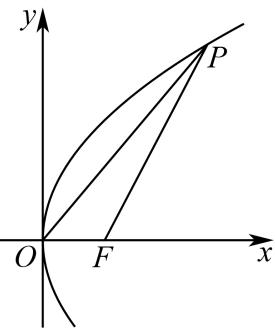
从 6 名男生和 4 名女生中选出 3 人参加人工智能技能培训。设事件 ：至少抽到一名女生，事件 ：恰好抽到一名男生，则 ______。
事件 包含于 ，至少一名女生的选法有 种，恰好一名男生的有 种。
所以 。
已知复数 ，， 是虚数单位，则 的取值范围是______。
[82,122]
代入 得 其中 。 遍历一周，故值域为 。
如图所示， 为山脚两侧共线的三点，在山顶 处测得三点的俯角分别为 ，，。计划沿直线 开通穿山隧道，为了求出隧道 的长度，还测得 米， 米， 米，则根据以上数据，隧道 的长度约为______米。（结果精确到 1 米）
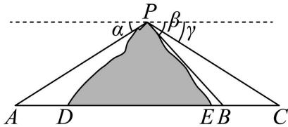
804
在 中，，由正弦定理 在 中再用正弦定理，得 所以所求距离为 按题设精度得 。
在平面直角坐标系 中，点 ，，。若点 满足：，，则 的最大值是______。
由条件得 、，解得 。
因此 ，且随着 变化点 遍历该圆。
由 ，在 等位置等号成立，故最大值为 。
已知 ，则下列不等式成立的是（ ）。
A.
B.
C.
D.
D
由 得 ，所以 A 错；，所以 B 错。
又 所以 C 错。
由 且 ，相加得 ，故 D 正确。
已知双曲线的方程为 ，则（ ）。
A. 渐近线与 无关；
B. 实轴长与 无关；
C. 焦距与 无关；
D. 焦点与 无关。
A
当 时标准式为 ；当 时为 。
两种情况渐近线均为 ，与参数无关；实轴长、焦距及焦点坐标都随参数变化。
因此选 A。
音乐，是人类精神通过无意识计算而获得的愉悦享受，1807 年法国数学家傅里叶发现代表任何周期性声音的公式是形如 的简单正弦型函数之和，而且这些正弦型函数的频率都是其中一个最小频率的整数倍，比如用小提琴演奏的某音叉的声音图象是由图 1、2、3 三个函数图象组成的，则小提琴演奏的该音叉的声音函数可以为（ ）。
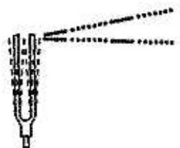
图 1：
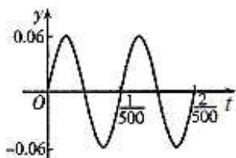
图 2：
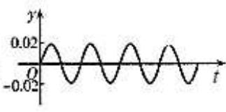
图 3：
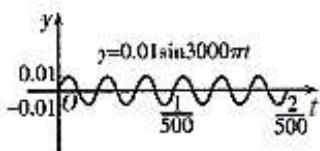
A.
B.
C.
D.
C
三幅图对应振幅依次为 ，周期依次为 ；由 ，角频率依次为 。
把三项相加，得到C中的表达式。
已知函数 的表达式为 ，，则下列命题正确的是（ ）。
A. 函数 的零点的个数一定是 3 个；
B. 若集合 的解集是 ，则实数对 有 2 对；
C. 函数 必存在极值；
D. 函数 在 处的切线方程为 ，则 。
B
A、C均可用 反驳：此时 只有一个零点且没有极值。
B中，为使 的解集恰为 ，零点0必须为奇重根，已知零点1必须为偶重根。
因此 ， 为 或 ，共2对，B正确。
D中 ，还可能 ，故D错误。
已知函数 的表达式为 ，。
（1），求 的值；
（2）若 依次成等比数列，求 的值。
。
。
（1） 且 ，所以 。于是 。
（2）三项依次为 。
成等比数列要求各项非零，且 ，故 。
结合范围得 ，此时公比为 ，符合题意。
某工厂生产某种产品的月产量（单位：千件）与单位成本（单位：元／件）的数据如下：
| 月份 | 产量 /千件 | 单位成本 /（元／件） |
|---|---|---|
| 1 | 2 | 73 |
| 2 | 3 | 72 |
| 3 | 4 | 71 |
| 4 | 3 | 73 |
| 5 | 4 | 69 |
| 6 | 5 | 68 |
（1）计算产量与单位成本的相关系数（无需过程）；
（2）建立产量与单位成本的回归方程（写出必要的过程）；
（3）若该工厂计划 7 月份生产 7 千件该产品，则单位成本预计是多少？
附：相关系数 的计算公式：
回归系数计算公式：
（1）；（2）；（3）按（2）舍入后的方程预测为 元/件。
（1），中心化平方和分别为 与 ，中心化乘积和为 。
故
（2），，因此按题设精度回归方程为 。
（3）将 代入已取两位小数的回归方程，得预测成本 元/件。若保留精确回归系数再作最终舍入，则为 元/件，二者差异来自中间舍入。
在四棱锥 中，四边形 是菱形，，，，点 为 的中点，点 为 上的点，，，平面 与棱 交于点 。
图 1：
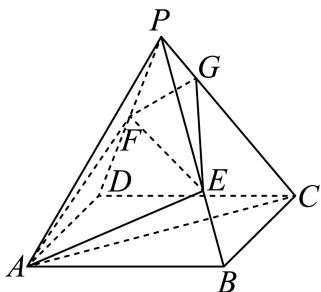
图 2：
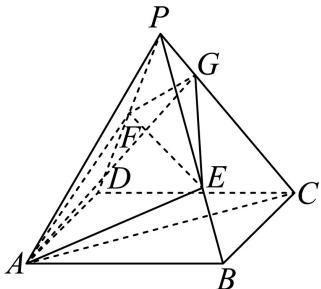
（1）求证：异面直线 与 垂直；
（2）当 时，求 与底面 所成的线面角大小。
证明见解析
（1）令 。
菱形对角线互相垂直平分，且 ，所以 ，进而 底面。
以 为坐标轴，得 。
，设 ，则 与 内积为 ，故 。
（2） 时，，平面 方程为 。
直线 参数式为 ，代入得 ，故 。
，与底面所成角 满足 故 。
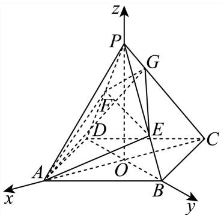
已知椭圆 经过点 ，离心率为 。过点 ， 的动直线 交椭圆 于 两点。
（1）求椭圆 的方程；
（2）若直线 与 相切，求当 时， 的长；
（3）若以 为直径的圆经过 轴上方的定点 ，求点 的坐标。
（1）；（2）；（3），定点为 。
（1）由 及 得 ，故椭圆为 。
（2）设 。直线与圆相切给出 ，故 。与椭圆联立得 ，由两根之差及弦长公式
（3）设定点 ，，直线 。
与椭圆联立，横坐标满足 。
将韦达关系代入 ，整理得 该式对所有可取斜率成立，故各项系数为零。
由 得 ，再由 得 ，常数项给出 ，取 。
因此当且仅当 时有上述定点，且 。
竖直弦的直径圆也经过此点，结论完整。
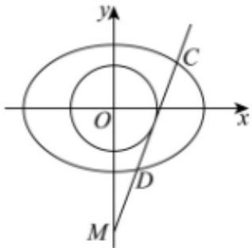
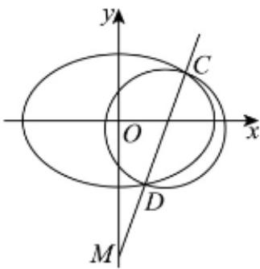
设定义域为 的函数 的表达式为 ，我们可以证明函数 存在唯一的零点，设该零点为 。如图，过点 作函数 的切线 与 轴的交点为 ，设横坐标为 ，若 ，则过点 作函数 的切线 与 轴的交点为 ，设横坐标为 ；若 ，则停止作切线。……依次类推，得到数列 ，记 ，。

（1）若 ，，求 ；
（2）求证：数列 是严格递减数列；
（3）若 ，比较 与 的大小，并说明理由。
（1）；（2）在零点存在条件 下证明见解析；（3）令 为 唯一根，比较结果依 与 的大小分别为 、、。
（1）切线迭代满足 。代入 ，得 。
（2）若所称零点 存在，则 。
原定义域为 ，所以此处必须有 。
对任意 ，令 ，则 因为右侧在 上导数为 ，且在 为 。
同时 。
因此由归纳法所有后项都保持在 右侧，并且严格递减。
（3） 时 ，且 令 ，则 。
又 ，，所以有唯一 使 。
当 、、 时，所比较的两式依次满足大于、等于、小于。
校订说明：原题声称任意 时函数在 有唯一零点，与 冲突。（2）按零点存在即 证明；（3） 的迭代与比较仍有意义，但 不在原定义域内，不能称为该函数零点。另补足了原解析未证明的迭代点始终位于根右侧的归纳步骤。